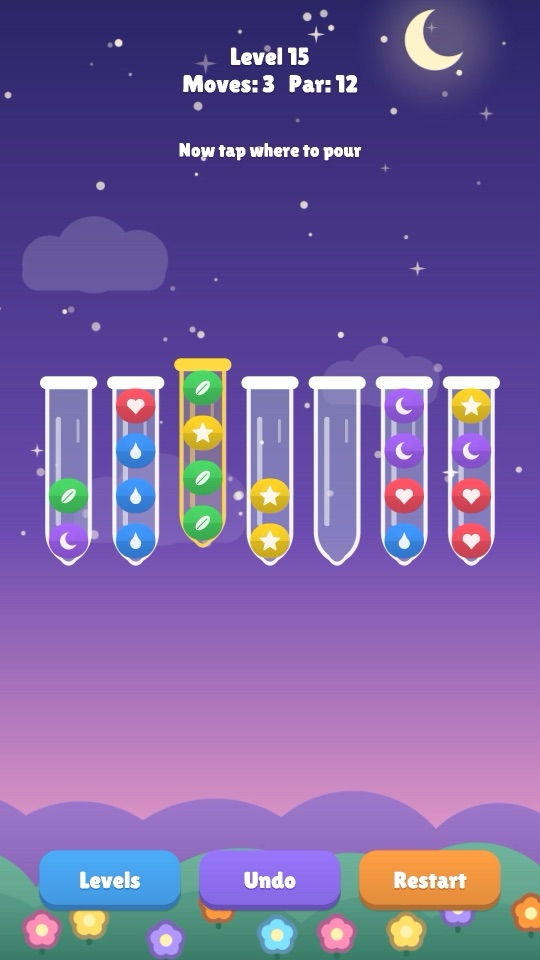
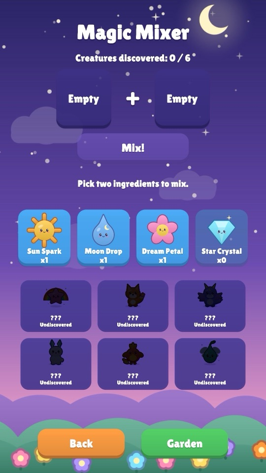
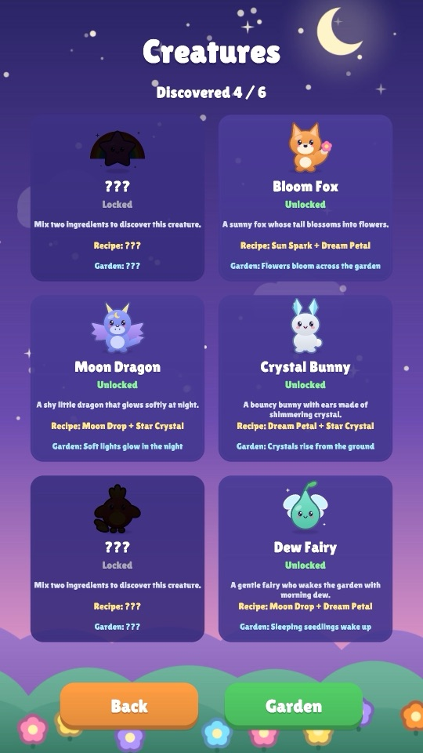
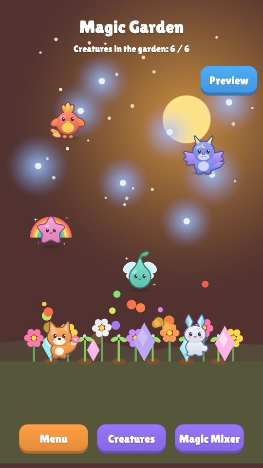

Wonderlings
Sort colors, mix magic, meet creatures
Wonderlings is a calm color-sorting puzzle game for children aged 6 to 12. Pour glowing potions from tube to tube until every tube holds one color. Solve puzzles across four magical lands, earn ingredients, mix them in the Magic Mixer and discover six friendly creatures for your garden.
- 40 levels in 4 lands, with stars and gifts
- Plays offline, with no accounts or purchases; optional, child-safe reward videos never interrupt play
- Color-blind symbols, screen-reader support and a calm-motion setting
- 16 languages
A look inside




Skills kids practise
- Logic and planning
Each puzzle rewards thinking a few pours ahead and working out the order of moves.
- Patience and persistence
No timers and no pressure: kids undo, rethink and try again at their own pace.
- Colors and patterns
Sorting by color, with a symbol for every color, builds pattern spotting for every child.
- Doing it efficiently
Stars for solving in fewer moves invite kids to look for a smarter way.
- Curiosity
Combining ingredients in the Magic Mixer is a small experiment: which pair makes which creature?
Privacy
Wonderlings collects no personal information. Optional reward videos come from Google AdMob, set up for children. Read the full privacy policy.
Contact
Questions or feedback: hichgah.game@gmail.com